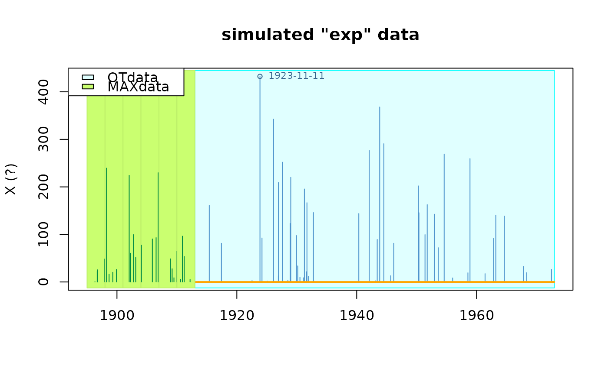
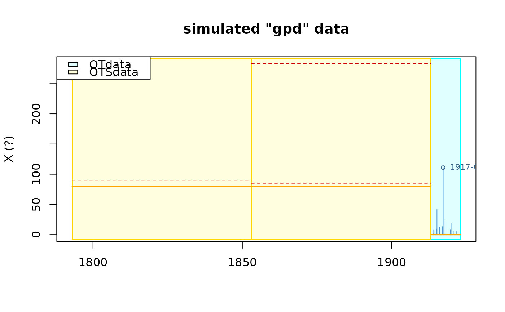
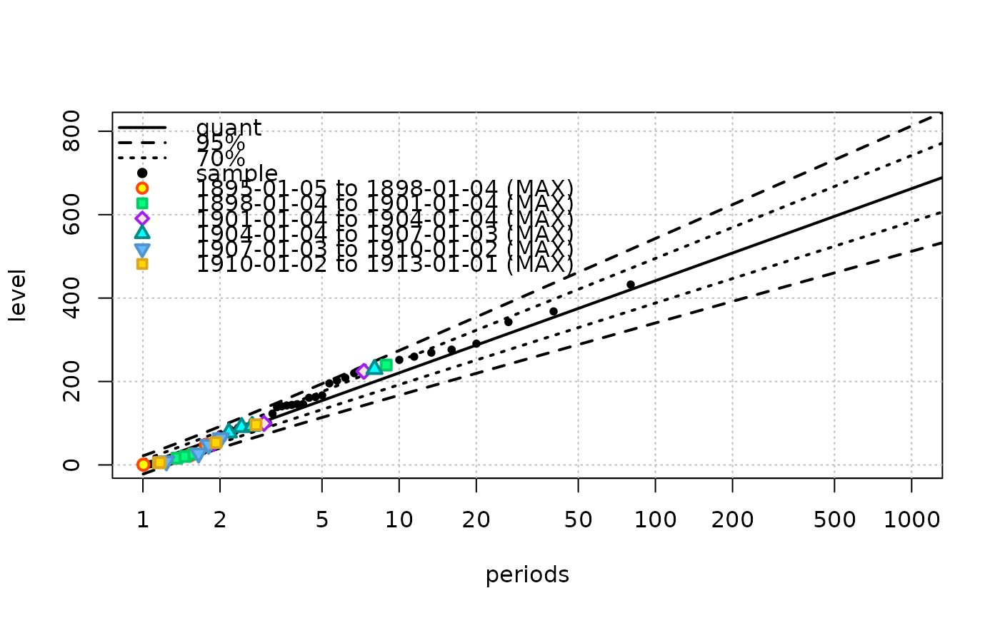

Simulate a random RenData object
rRendata.RdSimulate a random RenData object that can be used within the
Renouv function for tests.
Usage
rRendata(lambda = 1,
threshold = 0,
effDuration = 100,
distname.y = "exp",
par.y = c(rate = 1),
start = "1913-01-01",
name = NULL,
varName = "X", varUnit = "?",
simDate = TRUE, roundDate = FALSE,
MAX.effDuration = NULL,
MAX.r = rep(1L, length(MAX.effDuration)),
OTS.effDuration = NULL,
OTS.threshold = NULL)Arguments
- lambda
-
The rate of the Homogeneous Poisson Process.
- threshold
-
The threshold for the exceedances.
- effDuration
-
The effective duration of the main Over Threshold (OT) period. This must be a positive value.
- distname.y
-
Name of the distribution for the excesses to be simulated. See Details.
- par.y
-
A named vector or list giving the parameters values for the distribution. The name must conform to the chosen distribution.
- start
-
A
POSIXctobject, or character that can be coerced toPOSIXct(e.g. a date given as a character in the"YYYY-MM-DD"format) giving the start of the main OT sample. - name
-
A name for the dataset which will be attached to it and be used by some methods for
"Rendata". - varName
-
Name of the simulated variable.
- varUnit
-
Unit for the simulated variable (is used by plot).
- simDate
-
Logical. If
TRUEthe dates will be reported for the historical data (MAX and OTS). - roundDate
-
Logical. If
TRUEthe time part ot thedatecolumn will be rounded. Not implemented yet. - MAX.effDuration
-
Vector of the durations for the
MAXhistorical blocks. - MAX.r
-
Vector of the (positive) numbers of observations for
MAXhistorical blocks. Must have the same length asMAX.effDuration. See Caution below for the effect of selection large values. - OTS.effDuration
-
Vector of durations for the
OTShistorical blocks. - OTS.threshold
-
Vector of numerical thresholds for the observations in
OTShistorical blocks. Must have the same length asOTS.effDuration. All values must be>= threshold.
Details
The distribution of the excesses named in distname.y can be
any known distribution, provided that when prefixed with the usual
"r" letter, the name gives the wanted simulation function. For
example, with distname.y = "exp", the rexp function is
used and par.y must thus contain an element with name
"rate".
When a suitable numeric threshold is given, the simulated marks of the
marked process are the sum of the threshold and of a random excess
drawn from distname.y. When the threshold is not a finite
numeric value, the observed marks are the simulated values themselves.
The main OT sample is assumed to begin at start. Historical MAX
blocks (if any) are assumed to be just before start, and OTS
are just before start or just before the beginning of the MAX
blocks when there are some. The dates are computed without taking
into consideration the problems of leap years or leap seconds.
Note
When effDuration is small relative to the inverse of
lambda the number of simulated marks in the OT sample may be
\(0\) which can cause problems for some uses of the created data.
Caution
By construction, each MAX block contains at least one
observation, while a random period of the same duration might have
none. The simulated number of events on a MAX block is generated using
a censored Poisson distribution. Care must be taken when estimations
are made on such data, since creating MAX blocks obviously
create a positive bias on lambda. Such bias then also affects
the other parameters concerning the excesses, because these
parameters are no longer orthogonal to the rate parameter
lambda when historical data are used. The bias can be severe if
MAX blocks with small durations are used, or if large number of
events are chosen in MAX.r.
Examples
set.seed(1234)
rd <- rRendata(effDuration = 60,
MAX.effDuration = rep(3, 6),
MAX.r = rep(4, 6),
distname.y = "exp", par.y = c(rate = 1/100))
plot(rd)

summary(rd)
#> o Dataset simulated "exp" data
#> data 'simulated "exp" data', variable 'X' (?)
#>
#> o OT data (main sample) from 1913-01-01 to 1972-12-17 (eff. dur. 60.00 years)
#>
#> n Min. 1st Qu. Median Mean 3rd Qu.
#> 50.0000000 0.6510342 14.1203716 91.9701602 114.8248081 165.6590278
#> Max.
#> 432.4563092
#>
#> o no missing OT periods
#>
#> o 'MAX' historical info: 6 blocks, 24 obs., total duration = 18.00 years
#>
#> o no 'OTS' historical data
#>
rd2 <- rRendata(effDuration = 10,
MAX.effDuration = rep(60, 2),
MAX.r = rep(3, 2),
simDate = FALSE,
distname.y = "gpd", par.y = c(scale = 20, shape = 0.16))
plot(rd2)
rd3 <- rRendata(effDuration = 10,
OTS.effDuration = rep(60, 2),
OTS.threshold = rep(80, 2),
simDate = FALSE,
distname.y = "gpd", par.y = c(scale = 20, shape = 0.16))
plot(rd3)

## Renouv fit with historical data
fit <- Renouv(rd)

summary(fit)
#> o Main sample 'Over Threshold'
#> . Threshold 0.00
#> . Effect. duration 60.00 years
#> . Nb. of exceed. 50
#>
#> o Estimated rate 'lambda' for Poisson process (events): 1.00 evt/year.
#>
#> o Distribution for exceedances y: "exponential", with 1 par. "rate"
#>
#> o No transformation applied
#>
#> o Coefficients
#>
#> Estimate Std. Error t value
#> lambda 0.99752850 0.116045914 8.595981
#> rate 0.01042349 0.001200677 8.681345
#>
#> Degrees of freedom: 2 (param.) and 74 (obs)
#>
#> o Inference method used for return levels
#> "Delta method"
#>
#> o Return levels
#>
#> period quant L.95 U.95 L.70 U.70
#> 24 10 221 167 274 192 249
#> 30 20 287 220 355 251 323
#> 34 50 375 288 462 329 421
#> 36 100 442 340 543 388 495
#> 38 200 508 392 624 447 569
#> 41 300 547 422 672 481 613
#> 43 400 575 444 705 505 644
#> 44 500 596 461 731 524 668
#> 46 600 613 474 753 540 687
#> 47 700 628 486 771 553 704
#> 48 800 641 496 787 564 718
#> 49 900 652 504 800 574 731
#> 50 1000 662 512 813 583 742
#>
#>
#> o 'MAX' historical info: 6 blocks, 24 obs., total duration = 18.00 years
#>
#> o no 'OTS' historical data
#>
#> o Kolmogorov-Smirnov test
#>
#> Exact one-sample Kolmogorov-Smirnov test
#>
#> data: OTjitter(y.OT, threshold = 0)
#> D = 0.18402, p-value = 0.05916
#> alternative hypothesis: two-sided
#>
#>
#> o Implied model for block maxima
#> Distribution: gumbel
#> Coeffficients
#> loc scale
#> -0.2374022 95.9371765